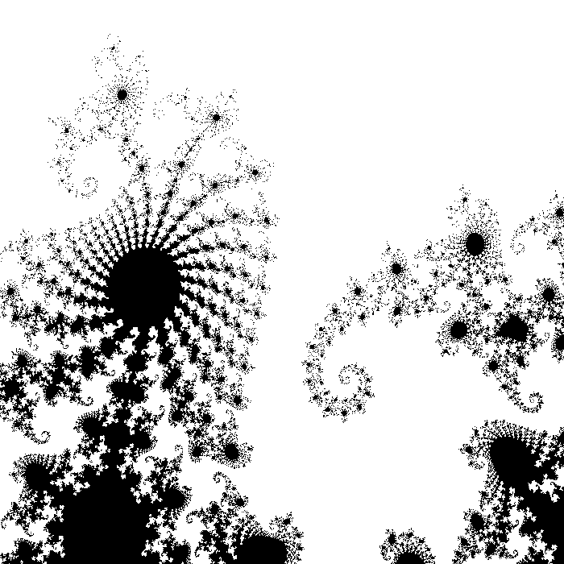

---

layout: default
title: 01-mandelbrot

---

{% highlight c++ %}
// Tyler Mumford, 2014
// Draws the Mandelbrot fractal and save it to a file.

#include <stdio.h>
#include <stdlib.h>
#include <math.h>
#include <complex.h>

int iterate_pt (double complex c);

int main () {
	const double crmin = -0.75, crmax = -0.74, cimin = -0.138, cimax = -0.127;
	const int ncols = 700, nrows = 700;
	int Mandelbrot[ncols][nrows];
	int x, y;
	unsigned char color;

	double complex c, im = 0.0 + 1.0i;
	double dx = (crmax-crmin) / ncols, dy = (cimax-cimin) / nrows;

	for (y=0; y < nrows; y++) {
		for (x=0; x < ncols; x++) {
			c = (crmin+x*dx) + (cimin+y*dy)*im;
			Mandelbrot[x][y] = iterate_pt(c) + 65;
		}
	}

	FILE *ppmFile = fopen("Mandelbrot.ppm", "w");

	fprintf(ppmFile, "P6\n%i %i\n1\n", ncols, nrows);
	for (x=0; x<ncols; x++) {
		for (y=0;y<nrows; y++) {
			color = (unsigned char) Mandelbrot[x][y];
			fwrite(&color, 1, 1, ppmFile);
			fwrite(&color, 1, 1, ppmFile);
			fwrite(&color, 1, 1, ppmFile);
		}
	}

	fclose(ppmFile);
	system("\"C:\\Program Files\\GIMP 2\\bin\\gimp-2.8.exe\" ./Mandelbrot.ppm");

	return 0;
}

int iterate_pt (double complex c) {
	double complex z = 0.0 + 0.0i;
	int iterations = 0, k;
	for (k=1; k <= (255-64); k++) {
		z = z*z + c;
		if (sqrt(z*conj(z)) > 50)
			break;
		else
			++iterations;
	}
	return iterations;
}
{% endhighlight %}


